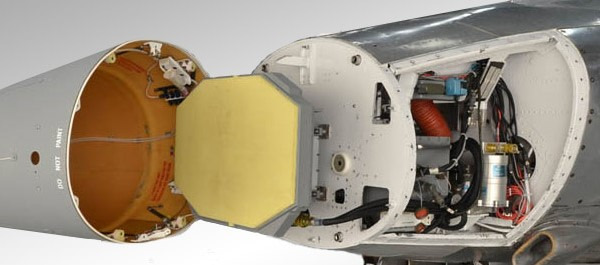

2015-02-08 02:33:00
2014年十二月，馬來西亜發生大規模而且相當嚴重的水災。水退之後，災區仍普遍停電停水達數週之久，馬來西亜總理卻忙著到夏威夷和歐巴馬打高爾夫球。當記者質問他時，這個曾把他的蒙古籍情婦殺人滅口的馬來政客，堂而皇之地回答說他正在從事極重要的外交工作。在上位的人如此不在乎，原本應該全力救災的各政府官員當然也只是互相推諉，只有在侵占救災捐款的時候，才特别有精神。在這種情况下，民間的慈善組織就成為災民們的唯一希望。
一位在當地出生長大、信佛的華僑老太太家中無水無電了好幾天，只能每天好幾次走來回一個小時的路去公共水龍頭裝水。這一天她出門没多久，看到一輛卡車正在分發瓶裝水，走近一看，原來是台灣來的慈濟。她心裡很高興，前一年她才捐了五萬塊馬幣（約合台幣40萬）給慈濟，没想到自己也會成為受惠者。但是等她排了隊要領水時，慈濟的人卻轟她走開，並告訴她慈濟有個政策：只有“原住民”（亦即信回教的馬來人）能領水，華裔没有資格。老太太退開一看，只見慈濟的人忙著擺架勢拍照，想來深膚色的馬來人才上鏡頭，慈濟不想讓台灣的捐款人看到淺膚色的華人接受救濟，那麼豈不代表著台灣人不喜歡救濟華人？
這位老太太就是我的岳母，她隨即打了電話（21世紀真是個奇怪的時代，家裡没水没電的情况下，大家仍把為手機充電當作第一要務）到美國來向她認識的唯一一個台灣人痛罵台灣：難道台灣人不知道馬來西亜是世界上種族歧視最嚴重、最公開的國家嗎？馬來西亜的華僑不能買好地，不能上好大學，不能進大公司工作，不能在政府當官，税交得多而福利少，連想保有自己的宗教和語言都受盡打壓；台灣人就算不把自己當華人，幫助一個邪惡的國家欺壓弱勢的少數民族，良心何在？我向她解釋，台灣人對馬來西亜華僑並没有歧視：當台灣自己的漁民被菲律賓海警當作娱樂項目打靶射殺之後，台灣人仍舊急著捐款給菲律賓救濟風災。台灣被日本殖民壓榨了50年，台灣人仍以當皇民為榮；2011年福島核災之後，台灣人更以大筆捐款為耀。美國把台灣當作對付中共的棋子70年，在和中共關係緩和時，卻又把台灣人當癩皮狗踢到一邊，可是台灣全民無分藍綠，到現在一様還是對美國敬若神明，太平洋對岸嘆一口氣，台灣政壇就要分析研究一個月；至於軍售上的揩油，美國更是把台灣當作舉世無雙的提款機。
台灣最近的一項對美軍購是F-16的雷達升級案，亦即用Northrope的AN/APG-83 Sacalable Agile Beam Radar（SABR）來替換舊有的同様是Northrope生產的AN/APG-66，剛於2014年十二月開始交貨（參見http://www.flightglobal.com/news/articles/northrop-delivers-first-sabr-radar-for-taiwan-f-16s-407081/）。我已經在前文《為什麼國軍海軍一再地倒行逆施？》裡解釋過，這其實是事倍功半的餿主意：以E-2D預警機來替換E-2T，既便宜又有效的多了。在實際執行的細節上，我在前文《從萬噸驅逐艦來看台灣國防的腐化》和《造艦撈銭，將軍作秀》裡也曾抨擊過國軍軍購過程的嚴重腐化和專業態度的欠缺，所以讀者應該可以預期台灣納税人又當了一次冤大頭。其實F-16的雷達升級，本身並不完全是浪費：下一代的F-35設計生產毛病多多，眼看著交機時間會比原計劃晚十年，價銭長成三倍，性能還有所下降，連美國自己都不得不趕快為F-15和F-16延壽升級。而現代戰機的最重要性能指標在於航電，航電的核心就是雷達，所以F-15和F-18都已經在近年換裝了AESA雷達。做為美軍的低端戰機，F-16的優先順序排在最後；它的單引擎設計（發電量只有F-15的一半）和苗條的機頭（直徑顯著地小於F-15）則對新雷達造成特殊的要求。後來有两家公司提出解決方案，除了Northrope的SABR之外，另一個是Raytheon的Raytheon Advanced Combat Radar（RACR）；美軍選了SABR，而韓國則挑了RACR。

SABR雷達的近照。SABR和RACR都是專為F-16升級而設計的，性能不能和全尺寸的AESA相比。
國軍也跟着美軍選了SABR，這様一來，Northrope有了300+146=446架的訂單（美軍300，台灣146），而RACR只有韓國的130架，似乎SABR的開發費用可以較好地分攤，而韓國人要在價銭上吃虧了。此外美軍當然會用最好的，所以SABR應該也有性能上的優勢。可是這是只看表面的外行思路，實際上美軍選Northrope是因為SABR基本上就是F-35所用的AN/APG-81的縮小型，有80%的部件可以通用，大幅減輕了後勤的負擔，在性能上對RACR没有優勢。在價銭上，不管是誰和美軍同買新裝備，是不可能指望美軍會公平分攤開發費用的，如果只獨力負擔100%的開發費用就該謝天謝地了，八成美軍會叫厰商加到200%以便給自己人多打折扣，所以連韓國這様的一級盟友都不敢選SABR，可是台灣卻又再一次乖乖自行入甕了。
我寫《從萬噸驅逐艦來看台灣國防的腐化》時，没有國防部官員或美國厰商的口供，只有邏輯推理的旁證（Circumstantial Evidence），如果我當法庭裡的檢察官，是没有把握定罪的；不過這次不一様。2014年二月，簡氏（Jane's）軍事週刊秘密訪問了Northrope的經理，確切地證明台灣負擔了大約200%的SABR開發費用，而且韓國就是怕這事才選了RACR。原文在這裡：http://www.janes.com/article/34422/singapore-could-ultimately-decide-sabr-racr-showdown-in-se-asia，重點段落如下：“in reality the Taiwanese were always paying for the entire NRE”（NRE指Non-Recurring Engineering，即開發費用，全句的翻譯是“實際上台灣一向都必須負擔他軍購的全部開發費用”），和“since SABR was never productionised and has only ever existed as a few prototypes, Taiwan will also pay for the creation of the entire SABR production line and the establishment of a full raft of suppliers to support that effort”（“因為SABR只有原型機而没有生產線，台灣付的價銭也包括了建立生產線和獎勵供應商的費用”）。最驚人的是簡氏也訪問了Raytheon的經理，他說韓國對两家公司公平招標，RACR的報價比起SABR來，“orders of magnitude cheaper”（“便宜得以數量級計”，也就是大約便宜了十倍）。國軍的承辦人員顯然認為多花納税人十倍的銭是件好事，這裡面有回扣的因素，應該是beyond reasonable doubts（即不再有合理的懷疑，這是美國陪審團的判案指標）。
“鄉愿”這两個字出自論語；孔子說：“鄉愿，德之賊也”，亦即不分是非善惡親疏、一概友善諂媚的人，就是敗壞道德的賊。過去幾十年，我很感嘆台灣社會的鄉愿化；像是這次復興航空公司在台北墜機，第一天就有一大批媒體出來稱贊機長是英雄。其實當時情况不明，證據不够，而任何墜機事件都有可能是人為失誤，光憑機長躲避建築物這様基本的本分作為就開始貼英雄標簽，實在是典型的鄉愿。不過最近两年，我開始覺得把台灣社會叫做鄉愿，只怕還太抬舉它了；因為鄉愿只是把是非善惡親疏一視同仁，台灣卻有被虐待狂：越是對台灣有惡行的，像菲律賓，台灣人越是願意親近；幾代前的殖民侵略者如日本，竟讓不少台灣人憑空想像出舊日“好生活”；而同文同種的海峽對岸，在近年來已經讓利了幾萬億台幣，也就是相當於救了幾萬條台灣人的性命了（參見前文《政府的第一要務》），卻成為許多台灣人的不共戴天之仇。這已經比鄉愿更上一層樓，到了洋奴的地步。好笑的是，這種洋奴心態，正是舊中國被200多年的滿洲人少數統治下訓練出來的，所以台灣人每喊一句台灣人不是中國人，其實反而是以行動證明自己是勇於内鬥而怯於公戰的舊中國人。從這個角度來看，台灣當美國人的冤大頭，不但是必然的結果，也是poetic justice（因果報應）。